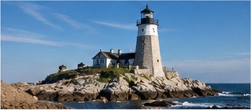
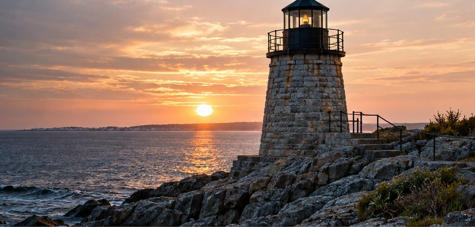
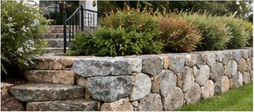
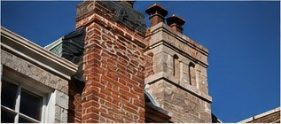
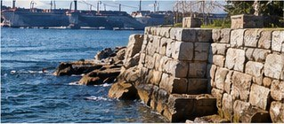
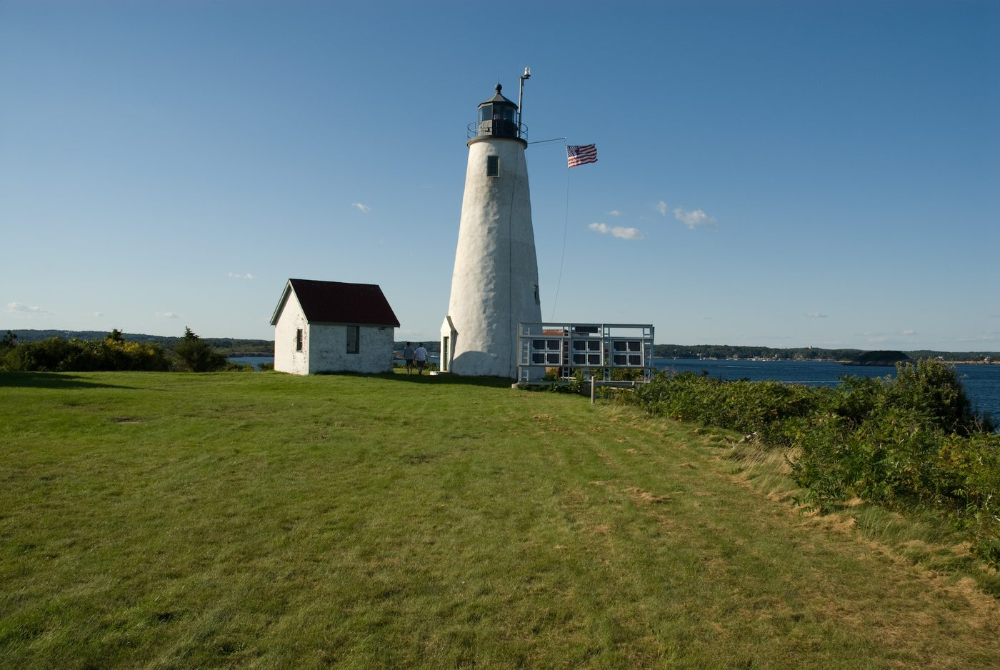
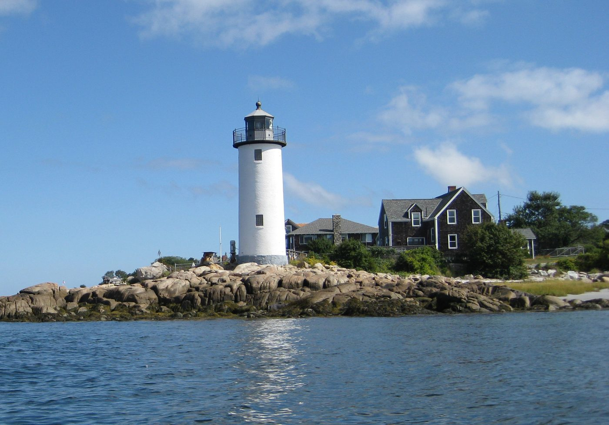
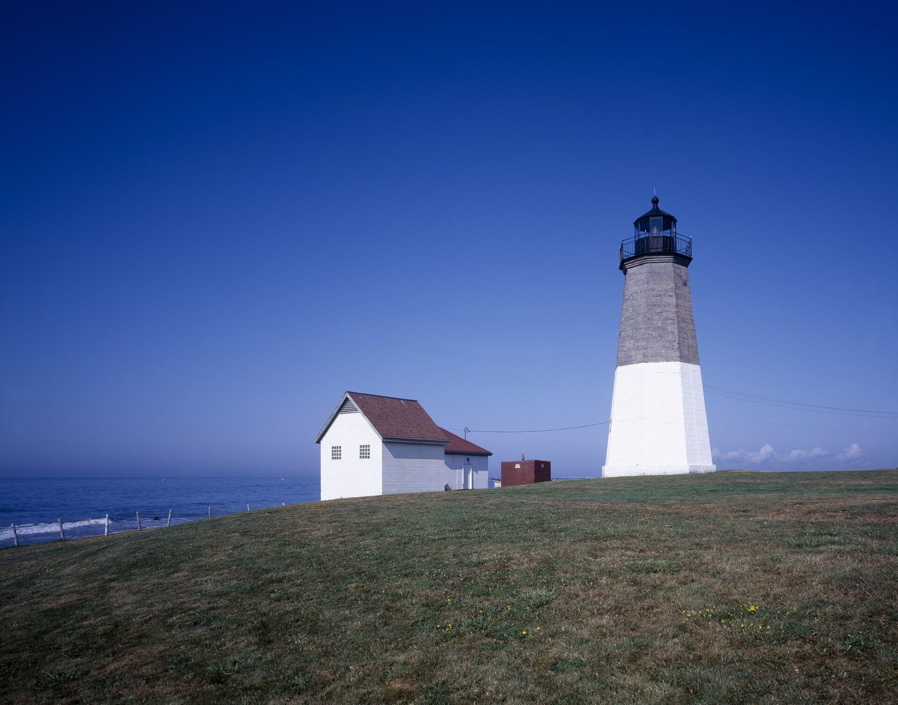
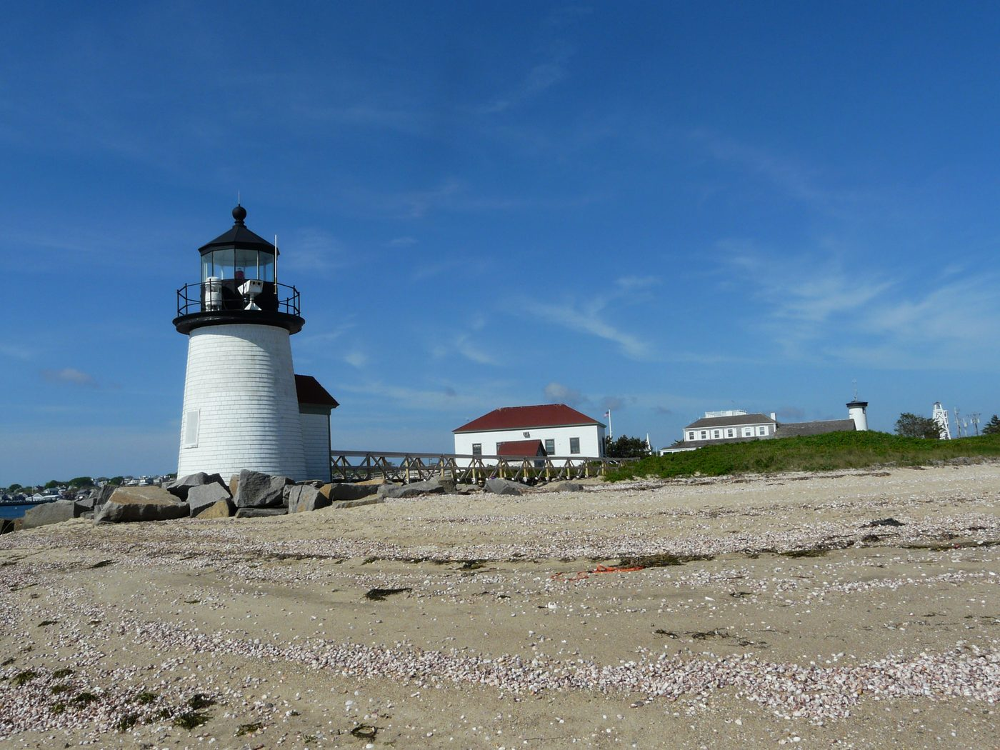

Lighthouse Restoration
More than 20 lighthouse projects for the U.S. Coast Guard and preservation organizations.
Learn more
J. Nally & Company specializes in historic restoration, lighthouse work, fine stonework and coastal masonry across Massachusetts' North Shore and the New England coast.

More than 20 lighthouse projects for the U.S. Coast Guard and preservation organizations.
Learn more
Stone walls, granite steps, bluestone patios and walkways built for coastal weather.
Learn more
Chimney rebuilding, repointing and period-correct brick and stone restoration.
Learn more
Seawalls and waterfront stonework built for tide, storm surge and salt.
Learn moreMartin J. "Marty" Nally learned masonry from his father, a mason who came over from Ireland. With more than 30 years in historic restoration and about 20 lighthouse projects for the U.S. Coast Guard, his work can be found on landmark homes, coastal structures and lighthouses throughout New England.
Our storyPeriod-correct materials and traditional methods, with the same care for a 19th-century lighthouse tower or the stone wall at the end of your drive.
Restoration of lighthouse towers, keepers' houses and coastal structures, including work for the U.S. Coast Guard.
Preservation of period homes, estates and landmarks using lime mortar and matched stone and brick.
Seawalls, jetties and waterfront stonework built and repaired to stand up to tide, storm surge and salt.
Dry-laid and mortared fieldstone and granite walls, built new or rebuilt to match what's been there for a century.
Chimney rebuilds, crown repair and flashing, plus custom stone and brick fireplaces built to draw well and last.
Proper repointing, foundation repair and stone replacement that stops water damage without harming old masonry.
Granite steps, bluestone patios and cobblestone drives designed for coastal weather.
Condition assessments of failing walls, towers and foundations for owners, architects and preservation groups.
Few masons are trusted with a lighthouse. These towers take salt, ice, wind and constant freeze-thaw, and restoring them takes engineering judgment, historical accuracy and hand skill. Some jobs meant replacing thousands of bricks by hand; one meant flying materials out to an island by helicopter.

Restoration of the island light station, including full interior repointing of the tower and rebuilding three chimneys on the keepers' houses.

Brick tower restoration at the mouth of the Annisquam River, with roughly 3,000 bricks replaced by hand.

U.S. Coast Guard restoration of a soft brownstone tower, one of the most demanding materials on the coast to restore.

U.S. Coast Guard restoration of one of the most recognizable lights in New England.
Plus more than a dozen other lighthouse projects for the U.S. Coast Guard and preservation organizations. Lighthouse photographs are from Wikimedia Commons and show each light, not J. Nally & Company's restoration work.
Discuss a historic project
Martin J. "Marty" Nally learned masonry from his father, a mason who came over from Ireland.
Over more than 30 years he has become the preservation mason New England calls when the work matters: about 20 lighthouse projects for the U.S. Coast Guard, landmark homes in Beverly Farms and Manchester-by-the-Sea, and old walls and seawalls across Cape Ann.
His work has been featured in The Boston Globe and Northshore Magazine, and he still leads restoration work today, including the 2025 Bakers Island Light project for Essex Heritage.
Every job still gets the same thing: hands-on craftsmanship, respect for old stone, and work built to last another hundred years.
You have to use your brain. If you don't, you're going to get in trouble.
Marty always wanted to do it the right way. He didn't take shortcuts.
Thanks to mason Marty Nally and his crew, the lighthouse project was completed on time and on budget.
A picture book Marty wrote about restoring Bakers Island Light, the island lighthouse off Salem. According to The Boston Globe, the first printing of 9,000 copies sold out.
Find it in a libraryLinks open the original publishers' sites. Some may require a subscription.
Straightforward from the first site visit to the final stone.
We walk the property with you, look at the existing masonry and talk through what you want.
A clear explanation of what's needed and what isn't, with a written proposal.
Traditional methods and matched materials, with Marty on site.
Work that holds up to coastal New England weather for generations.
Based in Manchester-by-the-Sea and serving Cape Ann and the North Shore. For significant restoration and lighthouse work, we travel throughout New England.
We're always looking for hardworking people who take pride in their work. Experienced or just starting out, if you want to learn real restoration masonry on some of the most historic structures in New England, we'd like to hear from you.
Tell us a little about the work and we'll set up a time to come see it. Historic restoration, a stone wall or a difficult coastal repair: we'd be glad to hear about it.